<meta charset="utf-8">
<title>포르투 도보 1일 코스 — 실제 동선과 구간별 소요 시간 — 나의 투자 그리고 행복한 여행</title>
<meta name="description" content="포르투 1일 코스를 실제 도보 동선과 구간별 소요 시간으로 정리했습니다. 클레리구스 탑, 상 벤투 역, 히베이라, 동 루이스 다리, 모후 정원 일몰까지 순서와 요금, 교통 정보를 담았습니다.">
<meta name="viewport" content="width=device-width, initial-scale=1">
<link rel="canonical" href="https://danielmoon82.github.io/moon/posts/porto-1day-2026-09-12.html">
<link rel="preconnect" href="https://fonts.googleapis.com">
<link rel="preconnect" href="https://fonts.gstatic.com" crossorigin>
<link rel="stylesheet" href="https://fonts.googleapis.com/css2?family=Hahmlet:wght@400;600;800&family=IBM+Plex+Mono:wght@400;500&family=IBM+Plex+Sans+KR:wght@300;400;500;600&display=swap">

<style>
  :root{
    --paper:#F2EEE6;--surface:#FAF8F3;--surface-2:#E7E1D5;
    --ink:#191510;--ink-2:#4A4235;--ink-3:#7D7364;
    --line:#D6CEBF;--line-soft:#E4DDD0;--accent:#B06A15;--accent-bright:#C2761A;
    --up:#E5484D;--down:#3B82F6;
    --f-display:"Hahmlet",'Nanum Myeongjo',"Apple SD Gothic Neo",serif;
    --f-body:"IBM Plex Sans KR","Apple SD Gothic Neo","Malgun Gothic",sans-serif;
    --f-mono:"IBM Plex Mono","SFMono-Regular",Consolas,monospace;
    --pad:clamp(20px,5vw,64px);
  }
  @media (prefers-color-scheme:dark){
    :root:not([data-theme="light"]){
      --paper:#0B1120;--surface:#121A2C;--surface-2:#1A2439;
      --ink:#E9EEF7;--ink-2:#A9B5C9;--ink-3:#72809A;
      --line:#26314A;--line-soft:#1D2739;--accent:#E8A33D;--accent-bright:#F0B45C;
    }
  }
  *{box-sizing:border-box;}
  body{margin:0;background:var(--paper);color:var(--ink);font-family:var(--f-body);
    font-weight:300;font-size:1rem;line-height:1.75;-webkit-font-smoothing:antialiased;}
  a{color:inherit;}
  img{max-width:100%;height:auto;}
  .wrap{max-width:760px;margin:0 auto;padding-inline:var(--pad);}
  .nav{position:sticky;top:0;z-index:20;background:color-mix(in srgb,var(--paper) 88%,transparent);
    backdrop-filter:saturate(180%) blur(12px);border-bottom:1px solid var(--line);}
  .nav-in{display:flex;align-items:center;justify-content:space-between;height:58px;}
  .brand{font-family:var(--f-display);font-weight:600;font-size:1rem;letter-spacing:-.02em;text-decoration:none;}
  .back{font-family:var(--f-mono);font-size:.72rem;color:var(--ink-3);text-decoration:none;}
  .article{padding-block:clamp(40px,7vw,72px) clamp(56px,9vw,96px);}
  .eyebrow{font-family:var(--f-mono);font-size:.68rem;letter-spacing:.16em;text-transform:uppercase;
    color:var(--accent);margin:0 0 14px;}
  h1{font-family:var(--f-display);font-weight:800;font-size:clamp(1.6rem,4.4vw,2.3rem);
    line-height:1.3;letter-spacing:-.03em;margin:0 0 16px;}
  .byline{font-family:var(--f-mono);font-size:.72rem;color:var(--ink-3);
    padding-bottom:24px;border-bottom:1px solid var(--line);margin-bottom:32px;}
  h2{font-family:var(--f-display);font-weight:600;font-size:1.25rem;letter-spacing:-.02em;margin:42px 0 14px;}
  h3{font-family:var(--f-display);font-weight:600;font-size:1.05rem;letter-spacing:-.02em;
    margin:30px 0 10px;padding-top:14px;border-top:1px solid var(--line-soft);}
  h3 .code{font-family:var(--f-mono);font-size:.7rem;font-weight:400;color:var(--ink-3);margin-left:6px;}
  p{margin:0 0 18px;color:var(--ink-2);}
  ul.checks{margin:0 0 18px;padding-left:20px;color:var(--ink-2);}
  ul.checks li{margin-bottom:8px;font-size:.94rem;}
  table{width:100%;border-collapse:collapse;font-size:.88rem;margin-bottom:8px;}
  th{font-family:var(--f-mono);font-size:.66rem;letter-spacing:.06em;text-transform:uppercase;
    color:var(--ink-3);text-align:right;padding:8px 6px;border-bottom:1px solid var(--line);}
  th:first-child{text-align:left;}
  td{padding:10px 6px;border-bottom:1px solid var(--line-soft);color:var(--ink-2);}
  td.num{font-family:var(--f-mono);text-align:right;font-variant-numeric:tabular-nums;}
  td.up{color:var(--up);} td.down{color:var(--down);}
  .scroll{overflow-x:auto;}
  figure{margin:22px 0;}
  figure img{display:block;border-radius:3px;background:var(--surface-2);}
  figcaption{margin-top:8px;font-family:var(--f-mono);font-size:.68rem;color:var(--ink-3);text-align:center;}
  .note{margin-top:34px;padding:16px 18px;border-left:3px solid var(--accent);
    background:var(--surface);border-radius:0 3px 3px 0;}
  .note p{margin:0;font-size:.85rem;color:var(--ink-3);}
  .foot{border-top:1px solid var(--line);background:var(--surface);padding-block:30px 38px;}
  .foot p{margin:0;font-size:.8rem;color:var(--ink-3);}
</style>

<nav class="nav">
  <div class="wrap nav-in">
    <a class="brand" href="../index.html">나의 투자 그리고 행복한 여행</a>
    <a class="back" href="../index.html#stocks">← 시황으로</a>
  </div>
</nav>

<main class="wrap article">
  <p class="eyebrow">Market</p>
  <h1>포르투 도보 1일 코스 — 실제 동선과 구간별 소요 시간 기록</h1>
  <p class="byline">여행 · 2026-09-12 기준</p>

  <p>한 줄 요약: 2026년 6월 5일 09:37~21:20, 포르투 구시가를 도보로 한 바퀴 돈 기록입니다.</p>
  <p>사진 20장의 EXIF 촬영 시각과 GPS 좌표를 시간순으로 정렬해 동선을 복원했습니다.</p>
  <p>구간별 소요 시간, 오르내림이 심한 구간, 시간대별 인파를 정리했습니다.</p>
  <p>요금·교통 정보는 2026년 9월 기준으로 따로 확인해 붙였습니다.</p>
  <h2>하루 동선 한눈에 보기</h2>
  <p>사진에 기록된 촬영 시각 그대로입니다. 괄호 안은 앞 지점에서 걸린 시간입니다.</p>
  <ul class="checks">
    <li>09:37  알리아두스 대로 · 포르투 시청 — 출발</li>
    <li>10:02  카르무 성당 (25분)</li>
    <li>10:28  코르도아리아 일대 벽화 거리 (26분)</li>
    <li>10:42  상 벤투 역 · 리베르다드 광장 (14분)</li>
    <li>10:55  클레리구스 탑 (13분)</li>
    <li>11:08  대성당 방향 언덕 전망 (13분)</li>
    <li>11:13  대성당 아래 골목 (5분)</li>
    <li>11:31  엔히크 왕자 광장 (18분)</li>
    <li>12:19  강변 · 1번 트램 정류장 (48분)</li>
    <li>12:29  히베이라 강변 산책로 (10분)</li>
    <li>12:57  동 루이스 다리 건너 가이아 쪽 전망 (28분)</li>
    <li>15:07  산타 카타리나 방면 광장 — 사진 기록 2시간 10분 공백</li>
    <li>15:35  알마스 예배당 (28분)</li>
    <li>16:40  알리아두스 대로 (65분)</li>
    <li>17:11  바탈랴 방면 언덕 상가 (31분)</li>
    <li>19:15  상 벤투 역 내부 (2시간 4분)</li>
    <li>21:20  강 건너 모후 정원 — 일몰</li>
  </ul>
  <p>총 11시간 43분입니다. 이 중 12:57부터 15:07까지 2시간 10분은 사진이 없는 구간입니다. 점심과 휴식에 쓴 시간으로 보이지만 기록이 없어 단정하지 않겠습니다.</p>
  <div class="note"><p>핵심은 오전 3시간입니다. 09:37부터 12:29까지, 언덕 위에서 시작해 강변까지 내려오는 동안 주요 명소 대부분이 걸립니다.</p></div>
  <h2>1. 오전 9시 반, 알리아두스 대로에서 시작한 이유</h2>
  <figure>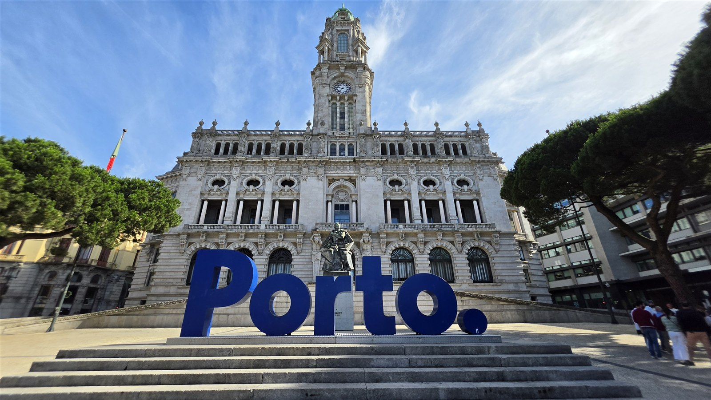<figcaption>아침 9시 37분 포르투 시청 앞. 관광객이 몰리기 전이라 Porto 조형물 앞이 비어 있었습니다</figcaption></figure>
  <p>포르투 시청이 있는 알리아두스 대로는 구시가에서 가장 높은 축에 속합니다. 여기서 시작하면 남은 동선이 대체로 내리막입니다.</p>
  <p>아침 9시 반이면 조형물 앞에 사람이 거의 없습니다. 같은 자리를 오후 4시 40분에 다시 지나갔는데 그때는 분위기가 완전히 달랐습니다.</p>
  <p>메트로 트린다드 역에서 걸어서 5분 거리라 공항에서 바로 오기도 편합니다.</p>
  <h2>2. 카르무 성당 — 측면 전체가 아줄레주</h2>
  <figure>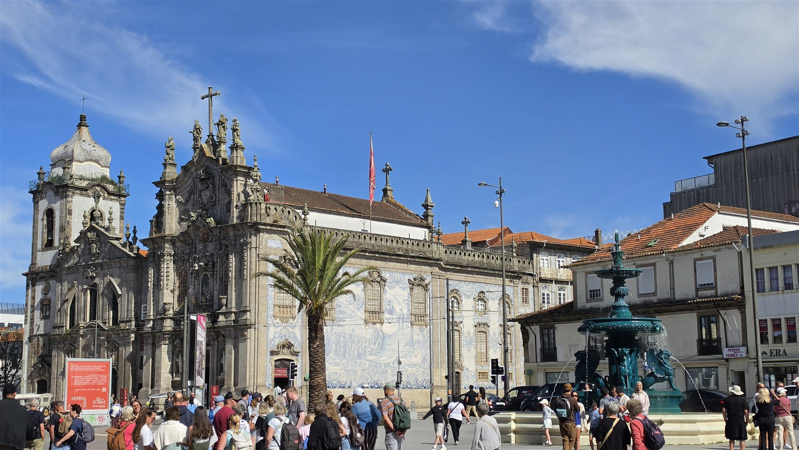<figcaption>오전 10시 2분 카르무 성당. 왼쪽 카르멜리타스 성당과 붙어 있고, 오른쪽 측벽 전체가 푸른 아줄레주입니다</figcaption></figure>
  <p>성당 두 채가 거의 붙어 서 있습니다. 왼쪽이 카르멜리타스, 오른쪽이 카르무입니다.</p>
  <p>사진에서 보이는 푸른 벽면이 카르무 성당의 측벽입니다. 정면이 아니라 옆면에 아줄레주가 붙어 있어서, 광장 쪽으로 돌아 들어가야 전체가 보입니다.</p>
  <p>**입장료는 무료입니다.** 다만 내부는 미사 시간에만 개방하는 경우가 많아 시간을 맞춰 가야 합니다.</p>
  <p>앞 광장에 사자 분수가 있고 벤치가 있습니다. 이 지점이 렐루 서점에서 도보 2분 거리입니다.</p>
  <h2>3. 클레리구스 탑 — 올라갈지 말지</h2>
  <figure>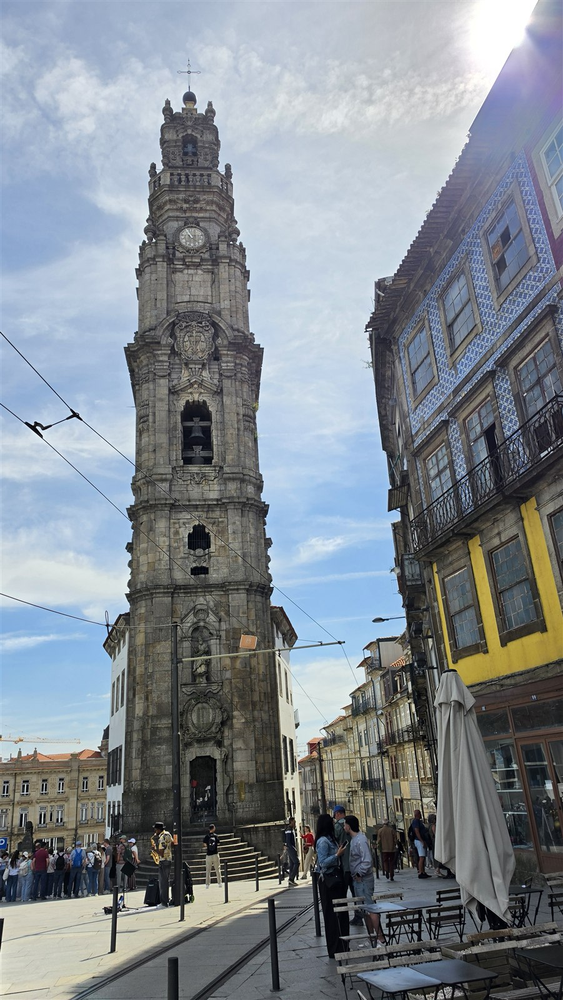<figcaption>오전 10시 55분 클레리구스 탑. 아래에서 올려다본 높이가 상당합니다</figcaption></figure>
  <p>포르투에서 가장 눈에 띄는 수직 구조물입니다. 시내 어디서든 방향을 잡는 기준이 됩니다.</p>
  <p>**탑과 박물관 통합권이 2026년 기준 약 8유로입니다.** 내부는 좁은 나선 계단이고, 위로 갈수록 폭이 줄어 마주 오는 사람과 비켜서야 합니다.</p>
  <p>올라가면 시내 전경이 360도로 보입니다. 다만 이날은 오전에 이미 아래쪽에 줄이 서 있었습니다. 사진 왼쪽에 보이는 줄이 그 대기줄입니다.</p>
  <p>전망만 목적이라면 대안이 있습니다. 뒤에 나오는 모후 정원은 무료이고, 강과 다리와 구시가가 한 화면에 들어옵니다.</p>
  <h2>4. 상 벤투 역 — 기차를 안 타도 들어가는 곳</h2>
  <figure>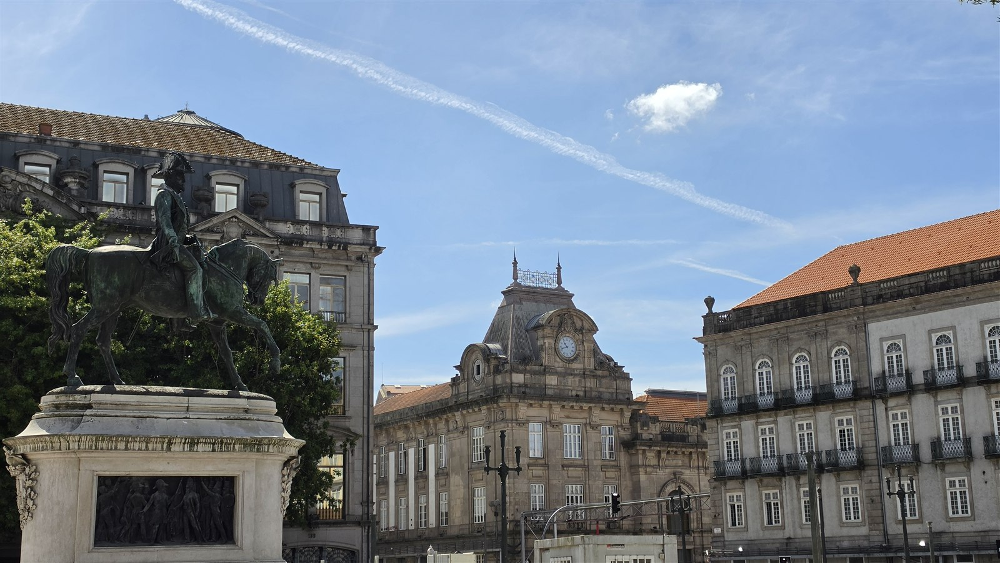<figcaption>오전 10시 42분 리베르다드 광장에서 본 상 벤투 역. 가운데 시계탑 건물이 역사입니다</figcaption></figure>
  <figure>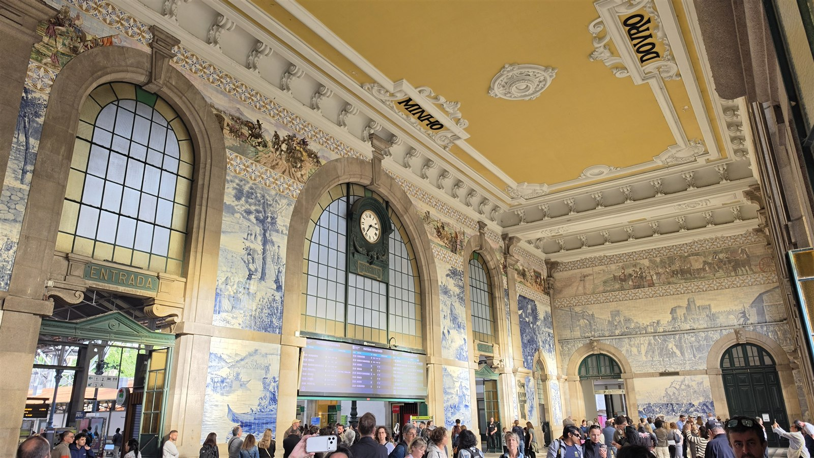<figcaption>저녁 7시 15분 상 벤투 역 대합실. 천장에 MINHO, DOURO 지명이 적혀 있습니다</figcaption></figure>
  <p>역 대합실 벽 전체가 아줄레주입니다. 포르투갈 북부의 역사적 장면과 지역 풍경을 타일로 그려놓았습니다.</p>
  <p>**입장료가 없습니다.** 기차를 타지 않아도 그냥 들어가서 볼 수 있습니다.</p>
  <p>이날은 오전 10시 42분에 외관을 보고, 저녁 7시 15분에 다시 들어가 내부를 봤습니다. 저녁 시간대가 사람이 적었습니다.</p>
  <p>두 번째 사진이 저녁에 찍은 대합실입니다. 오전에는 단체 관광객 때문에 정면 사진을 찍기 어려운 경우가 많습니다.</p>
  <h2>5. 대성당으로 내려가는 길</h2>
  <figure>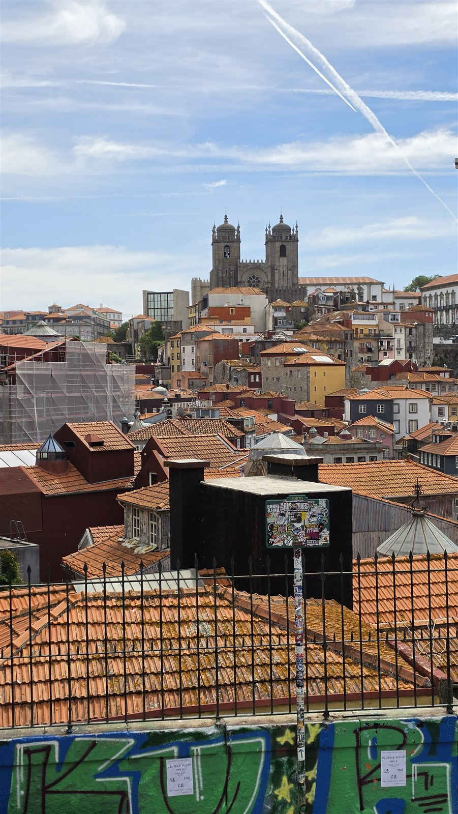<figcaption>오전 11시 8분. 주황색 지붕 너머로 대성당 두 탑이 보입니다</figcaption></figure>
  <figure>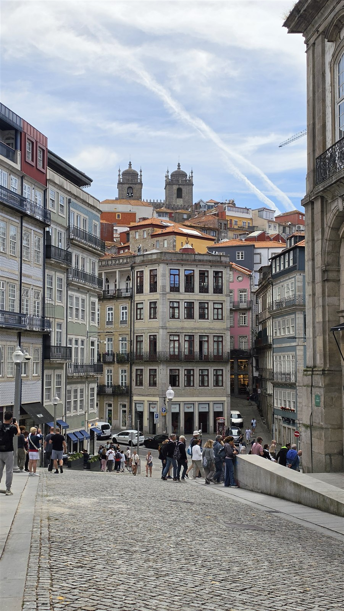<figcaption>오전 11시 13분 골목 끝에서 본 대성당. 이 골목이 아래로 계속 이어집니다</figcaption></figure>
  <p>클레리구스에서 대성당 방향으로 내려가는 길은 계속 비탈입니다. 13분 만에 첫 번째 전망 지점에 닿았습니다.</p>
  <p>이 구간이 포르투에서 지붕 풍경이 가장 잘 보이는 곳 중 하나입니다. 주황색 기와가 강 쪽으로 층층이 내려가는 게 보입니다.</p>
  <p>**대성당 입장료는 3유로이고, 종탑과 회랑이 각각 3유로 추가입니다.** 운영 시간은 09:00~18:30입니다.</p>
  <p>바닥이 돌로 되어 있고 경사가 있어서, 바닥이 미끄러운 신발은 피하는 게 좋습니다.</p>
  <h2>6. 엔히크 왕자 광장 — 여기서 강까지가 고비</h2>
  <figure>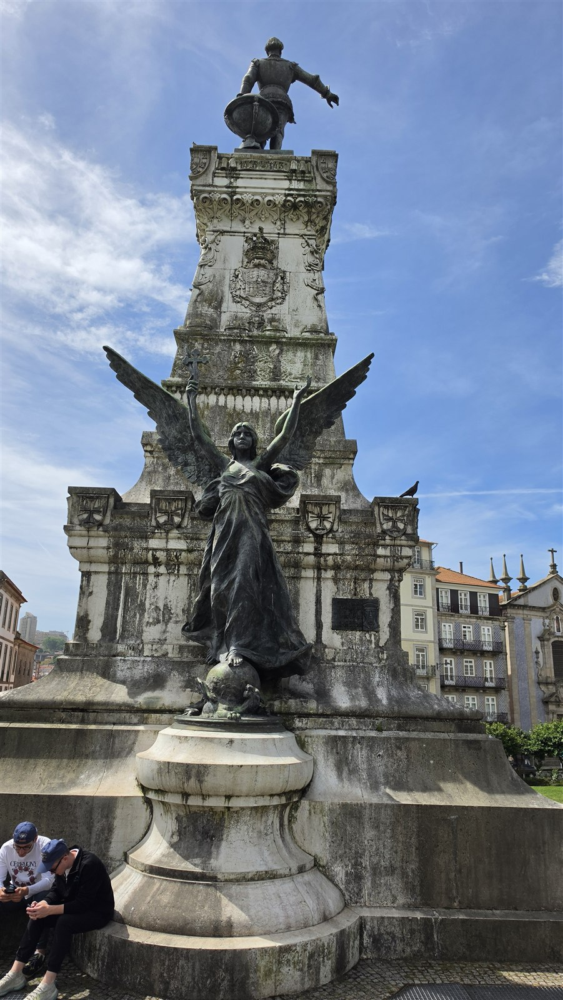<figcaption>오전 11시 26분 엔히크 왕자 기념비. 아래쪽 날개 달린 조각이 인상적입니다</figcaption></figure>
  <figure>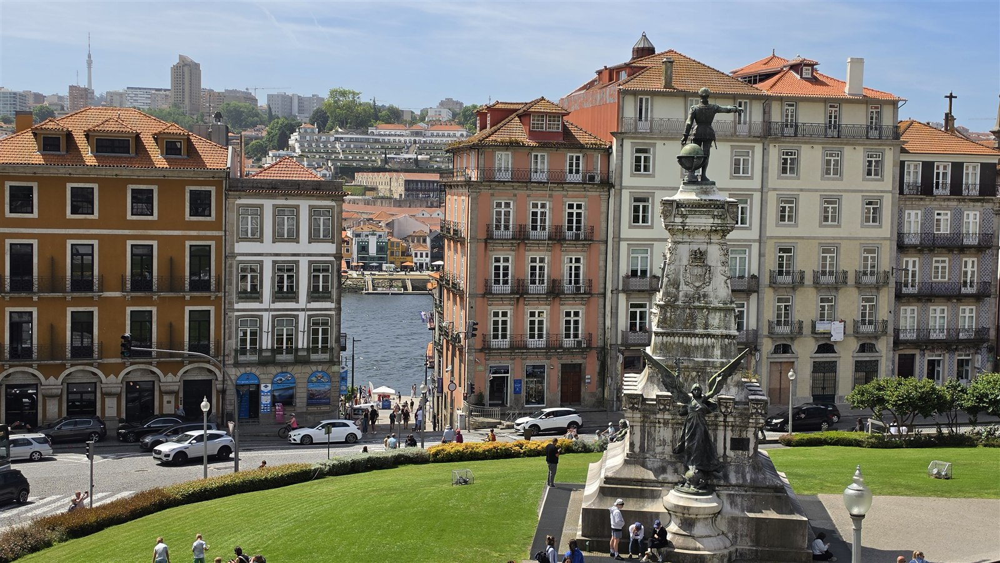<figcaption>오전 11시 31분 같은 광장 전경. 건물 사이로 강이 보이기 시작합니다</figcaption></figure>
  <p>대항해 시대를 연 인물을 기리는 광장입니다. 기념비 꼭대기에 엔히크 왕자가 서 있고, 아래에 날개를 편 조각이 붙어 있습니다.</p>
  <p>건물 사이로 강이 보이기 시작하는 지점이 여기입니다. 강이 보인다고 다 온 건 아닙니다.</p>
  <p>이 광장에서 강변 정류장까지 다음 사진까지 **48분**이 걸렸습니다. 직선거리로는 300m가 안 되는데 이렇게 걸린 이유는 그 사이가 전부 계단과 좁은 비탈길이기 때문입니다.</p>
  <p>이날 하루 동선에서 구간 소요 시간이 가장 길었던 곳이 바로 이 구간입니다.</p>
  <h2>7. 강변에 닿으면 분위기가 바뀝니다</h2>
  <figure>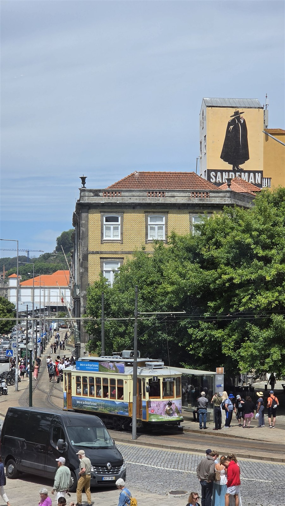<figcaption>낮 12시 19분 1번 트램. 뒤 건물 벽에 샌드맨 포트와인 광고가 그려져 있습니다</figcaption></figure>
  <figure>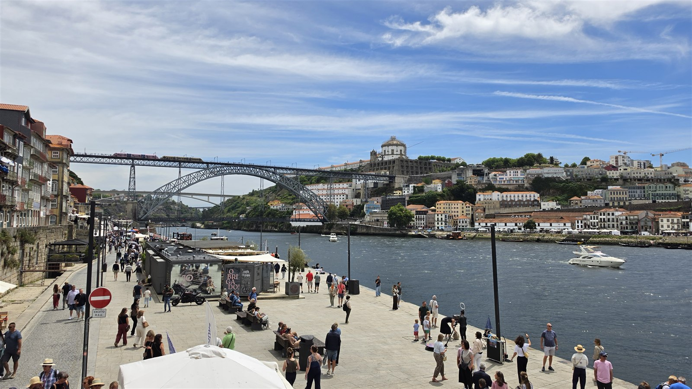<figcaption>낮 12시 29분 히베이라 강변. 동 루이스 다리와 건너편 세라 두 필라르 수도원이 한 화면에 들어옵니다</figcaption></figure>
  <p>강변에 내려오면 좁은 골목이 끝나고 시야가 트입니다.</p>
  <p>**1번 트램은 편도 6유로, 당일 왕복 8유로, 2일권 12유로입니다.** 히베이라에서 강을 따라 서쪽 포즈 두 도루까지 갑니다. 약 20분 간격 운행입니다.</p>
  <p>두 번째 사진이 포르투에서 가장 많이 찍히는 구도입니다. 왼쪽 강변 건물, 가운데 동 루이스 다리, 오른쪽 언덕 위 둥근 건물이 세라 두 필라르 수도원입니다.</p>
  <p>낮 12시 반 강변은 사람이 많습니다. 소지품은 앞으로 메는 게 좋습니다.</p>
  <h2>8. 다리를 건너면 보이는 것</h2>
  <figure>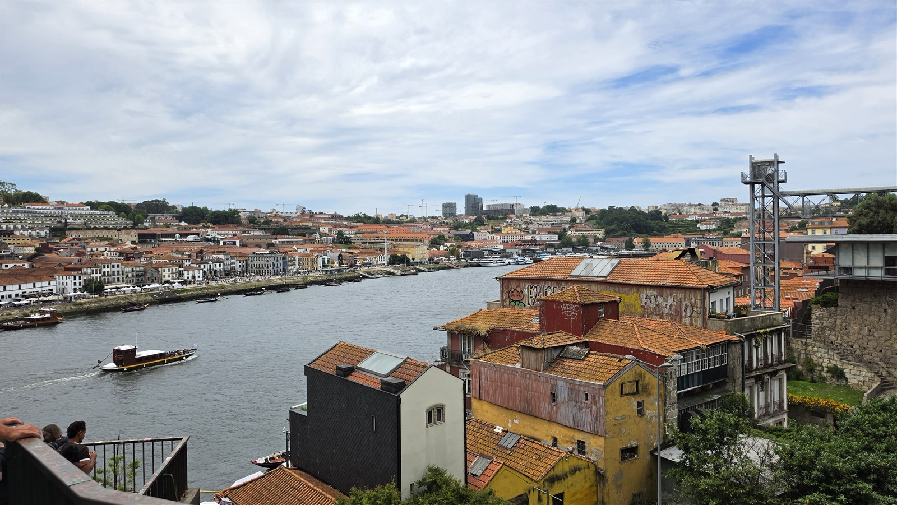<figcaption>낮 12시 57분 강 건너편. 오른쪽 철탑이 가이아 케이블카 승강장입니다</figcaption></figure>
  <p>동 루이스 다리는 2층 구조입니다. 위층은 메트로와 보행자, 아래층은 차와 보행자가 씁니다.</p>
  <p>전망은 위층이 훨씬 좋습니다. 강이 발밑으로 내려다보입니다. 고소공포가 있으면 아래층이 낫습니다.</p>
  <p>건너편은 빌라 노바 드 가이아입니다. 사진 오른쪽 아래 주황 지붕 건물들이 포트와인 저장고입니다.</p>
  <p>**가이아 케이블카는 편도 6유로, 왕복 9유로입니다.** 다리 위층에서 강변까지 약 600m를 5분에 내려갑니다. 걸어서도 내려갈 수 있지만 경사가 있습니다.</p>
  <h2>9. 오후의 산타 카타리나 — 알마스 예배당</h2>
  <figure>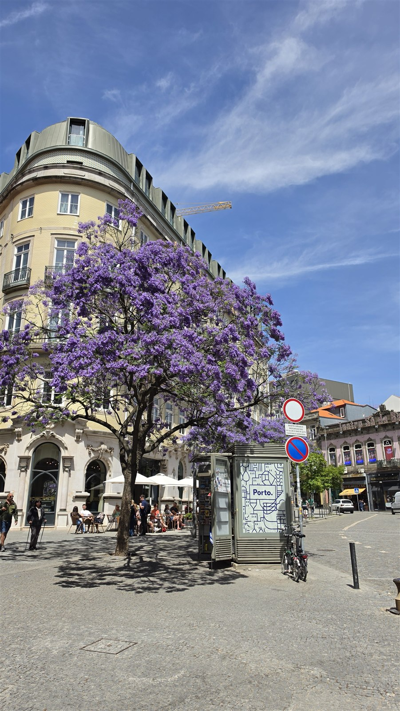<figcaption>오후 3시 7분. 6월 초라 자카란다가 보라색으로 피어 있었습니다</figcaption></figure>
  <figure>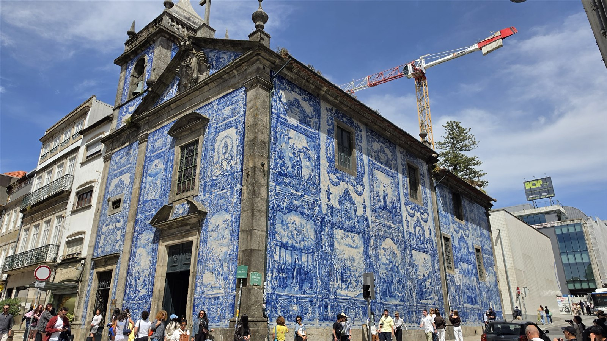<figcaption>오후 3시 35분 알마스 예배당. 건물 외벽 전체가 푸른 아줄레주로 덮여 있습니다</figcaption></figure>
  <p>오후에는 강 북쪽 산타 카타리나 방면으로 올라갔습니다.</p>
  <p>알마스 예배당은 외벽 전체가 아줄레주입니다. 카르무 성당이 측면만 타일이라면, 이곳은 정면과 측면이 모두 덮여 있습니다.</p>
  <p>거리 한가운데 서 있어서 멀리서부터 파랗게 보입니다. 길 건너편에서 봐야 전체가 한 화면에 들어옵니다.</p>
  <p>6월 초에 갔다면 자카란다를 볼 수 있습니다. 첫 번째 사진의 보라색 나무가 그것입니다. 5월 말에서 6월 중순 사이에만 핍니다.</p>
  <h2>10. 해가 길다 — 밤 9시 20분의 노을</h2>
  <figure>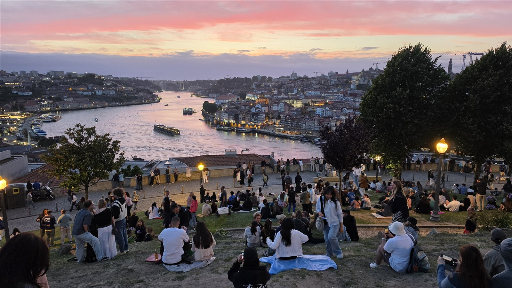<figcaption>밤 9시 20분 모후 정원. 이 시각에도 하늘에 붉은 빛이 남아 있었습니다</figcaption></figure>
  <p>이 사진의 촬영 시각이 **21시 20분**입니다. 해가 진 직후인데도 하늘이 이 정도로 밝습니다.</p>
  <p>6월 초 포르투는 밤 9시가 넘어야 어두워집니다. 한국 기준으로 일정을 짜면 저녁 시간을 통째로 놓칩니다.</p>
  <p>모후 정원은 동 루이스 다리 남쪽 끝, 메트로 자르딩 두 모후 역 바로 앞입니다. **입장료가 없습니다.**</p>
  <p>사진에서 보이듯 잔디 비탈에 사람들이 앉아 있습니다. 돗자리나 깔개를 챙기면 편합니다. 해 지기 30~40분 전에 가야 앞자리가 남아 있습니다.</p>
  <p>정면으로 도루강이 흐르고, 왼쪽에 히베이라 강변의 불빛이 켜집니다. 이날 하루 코스에서 가장 마지막에 본 풍경입니다.</p>
  <h2>11. 남들이 잘 안 쓰는 것 — 포르투에서 진짜 힘든 건 거리가 아닙니다</h2>
  <p>포르투 후기를 보면 '도시가 작아서 걸어서 다 된다'는 말이 많습니다. 거리만 보면 맞습니다.</p>
  <p>그런데 이날 구간별 소요 시간을 늘어놓으면 이렇게 갈립니다.</p>
  <ul class="checks">
    <li>평지 구간 — 카르무에서 상 벤투까지 14분, 상 벤투에서 클레리구스까지 13분</li>
    <li>내리막 구간 — 클레리구스에서 대성당 전망까지 13분</li>
    <li>계단·비탈 구간 — 엔히크 광장에서 강변까지 48분</li>
  </ul>
  <p>같은 300m라도 계단이 끼면 시간이 세 배로 듭니다.</p>
  <p>그래서 순서를 이렇게 잡는 게 유리합니다.</p>
  <div class="note"><p>높은 곳(알리아두스·클레리구스)에서 시작해 강변(히베이라)으로 내려가고, 돌아올 때는 걸어 올라오지 말고 메트로나 케이블카를 쓴다.</p></div>
  <p>이날도 강변까지 내려간 뒤에는 다시 걸어 올라오지 않았습니다. 오후 일정은 강 북쪽 평지 위주였습니다.</p>
  <p>반대로 강변에서 하루를 시작하면 오후 내내 오르막을 올라야 합니다. 여름이면 체력 소모가 훨씬 큽니다.</p>
  <h2>12. 교통 — 공항에서 시내까지</h2>
  <p>2026년 9월 기준으로 확인한 내용입니다. 요금은 바뀔 수 있습니다.</p>
  <ul class="checks">
    <li>공항에서 시내: 메트로 E선(보라색)으로 트린다드까지 약 30분</li>
    <li>요금: 공항~트린다드는 4구역(Z4) 적용으로 2.30유로</li>
    <li>안단테 아줄 카드: 0.60유로. 처음 한 번 사서 충전해 쓰는 교통카드</li>
    <li>시내 중심(Z2) 1회권: 약 1.40유로</li>
    <li>안단테 24시간권(Z2): 약 5.15유로</li>
    <li>안단테 투어: 24시간 7.75유로 / 72시간 16.55유로, 전 구역</li>
  </ul>
  <p>하루만 도보로 도는 일정이면 교통카드를 굳이 살 필요가 없을 수도 있습니다. 이날 동선은 대부분 걸어서 이어졌습니다.</p>
  <p>다만 공항 왕복과 모후 정원 이동에 메트로를 쓴다면 안단테 아줄 카드를 사두는 편이 낫습니다.</p>
  <h2>13. 비용은 얼마나 드나</h2>
  <p>아래는 개인 지출 기록이 아니라 **2026년 9월 기준으로 확인한 공개 요금**입니다. 실제로 얼마를 썼는지는 기록이 없어 적지 않습니다.</p>
  <ul class="checks">
    <li>클레리구스 탑+박물관 — 약 8유로</li>
    <li>렐루 서점 — 온라인 예약 8유로, 현장 구매 9유로</li>
    <li>포르투 대성당 — 3유로 (종탑·회랑 각 3유로 추가)</li>
    <li>가이아 케이블카 — 편도 6유로, 왕복 9유로</li>
    <li>1번 트램 — 편도 6유로, 당일 왕복 8유로</li>
    <li>카르무 성당 · 상 벤투 역 · 알마스 예배당 외관 · 모후 정원 — 무료</li>
  </ul>
  <p>유료 입장을 전부 하면 30유로 안팎, 무료 위주로 돌면 교통비만 들여도 하루가 채워집니다.</p>
  <p>포르투는 리스본보다 물가가 10~20% 정도 낮다고 알려져 있습니다.</p>
  <h2>14. 숙소는 어느 쪽이 나은가</h2>
  <p>이번 기록에는 숙소 사진이 없어 특정 숙소를 추천하지는 않겠습니다. 대신 이날 동선을 기준으로 지역별 장단점만 정리합니다.</p>
  <ul class="checks">
    <li>알리아두스·트린다드 주변 — 메트로 접근이 가장 좋고 공항에서 한 번에 옵니다. 이날 코스의 출발점이자 중간 경유지였습니다</li>
    <li>히베이라 강변 — 풍경은 가장 좋지만 언덕 아래라 시내로 올라올 때마다 비탈을 오릅니다. 밤에는 소음이 있습니다</li>
    <li>상 벤투·대성당 주변 — 도보 동선의 한가운데라 어디로든 가깝습니다. 대신 길이 좁고 경사가 있어 캐리어 끌기가 불편합니다</li>
    <li>가이아 쪽 — 강 건너에서 포르투 전경을 봅니다. 모후 정원과 가깝지만 시내로 올 때마다 다리를 건너야 합니다</li>
  </ul>
  <p>캐리어를 끌고 이동해야 한다면 언덕 아래보다 메트로 역 근처가 확실히 편합니다.</p>
  <h2>15. 가기 전에 알아두면 좋은 것</h2>
  <ul class="checks">
    <li>6월 평균 기온은 최저 14도 최고 23도, 월 강수량 51mm로 적습니다. 아침저녁으로 쌀쌀해 겉옷이 필요합니다</li>
    <li>6월 초에는 자카란다가 핍니다. 5월 말~6월 중순 사이에만 볼 수 있습니다</li>
    <li>해가 깁니다. 밤 9시 넘어까지 밝아 저녁 일정을 여유 있게 잡아도 됩니다</li>
    <li>바닥이 대부분 돌입니다. 쿠션 있는 신발이 낫습니다</li>
    <li>카드 결제가 잘 되지만 작은 카페나 재래시장에서는 현금이 필요할 수 있습니다</li>
    <li>식당에서 앉자마자 나오는 빵·올리브는 대부분 유료입니다. 원하지 않으면 정중히 거절하면 됩니다</li>
    <li>팁은 의무가 아닙니다. 만족했다면 5~10% 정도로 충분합니다</li>
    <li>치안은 대체로 무난한 편이지만, 강변 전망 지점과 랜드마크 주변 인파에서는 휴대폰을 조심해야 합니다</li>
  </ul>
  <h2>16. 이런 분께 맞는 코스입니다</h2>
  <p>맞는 경우입니다.</p>
  <ul class="checks">
    <li>포르투에 하루만 쓸 수 있어 핵심만 묶어서 돌아야 하는 경우</li>
    <li>택시나 투어보다 걸어 다니면서 보는 걸 좋아하는 경우</li>
    <li>리스본이나 산티아고 이동 중 포르투를 하루 끼워 넣은 일정</li>
  </ul>
  <p>안 맞는 경우입니다.</p>
  <ul class="checks">
    <li>무릎이나 발목이 약한 경우 — 계단과 비탈이 계속 이어집니다</li>
    <li>유모차나 캐리어를 끌고 다녀야 하는 경우 — 돌바닥에서 바퀴가 잘 안 굴러갑니다</li>
    <li>포트와인 와이너리 투어까지 넣고 싶은 경우 — 가이아에서 반나절을 따로 잡아야 합니다</li>
  </ul>
  <h2>자주 묻는 질문</h2>
  <p>**포르투는 하루면 충분한가요?**</p>
  <p>구시가 핵심만 본다면 하루로 가능합니다. 이날 기록이 11시간 43분이었습니다. 다만 와이너리 투어나 도루 밸리까지 넣으려면 최소 2박은 필요합니다.</p>
  <p>**어디서 시작하는 게 좋나요?**</p>
  <p>알리아두스 대로나 클레리구스처럼 높은 쪽에서 시작해 강변으로 내려오는 방향을 권합니다. 반대로 하면 오후 내내 오르막입니다.</p>
  <p>**렐루 서점은 꼭 가야 하나요?**</p>
  <p>입장료가 온라인 8유로, 현장 9유로이고 예약한 시간대에만 들어갈 수 있습니다. 책을 사면 입장료만큼 크레딧으로 돌려줍니다. 내부가 좁고 사람이 많아 호불호가 갈립니다.</p>
  <p>**일몰은 어디서 보나요?**</p>
  <p>모후 정원이 무료이고 접근이 쉽습니다. 메트로 자르딩 두 모후 역 바로 앞입니다. 6월 기준 밤 9시 넘어서까지 밝으니 8시 반쯤 도착하면 자리를 잡을 수 있습니다.</p>
  <p>**6월에 가면 더운가요?**</p>
  <p>평균 최고 23도로 덥지 않습니다. 오히려 아침저녁이 쌀쌀해 겉옷이 필요합니다. 비도 적은 편입니다.</p>
  <h2>정리하면</h2>
  <p>포르투는 거리가 짧은 대신 오르내림이 많은 도시입니다.</p>
  <p>명소 사이 거리를 지도에서 재고 일정을 짜면 계단 구간에서 계획이 밀립니다. 엔히크 광장에서 강변까지 48분이 걸린 게 그 예입니다.</p>
  <p>높은 곳에서 시작해 강으로 내려가고, 올라올 때는 메트로나 케이블카를 쓰는 것. 이 하나만 지켜도 하루가 훨씬 수월해집니다.</p>
  <p>그리고 6월에 간다면 저녁 일정을 늦게 잡아도 됩니다. 밤 9시 20분에도 노을이 남아 있었습니다.</p>
  <p style="font-size:12px;color:#999;line-height:1.6;margin-top:36px">사진은 2026년 6월 5일 직접 촬영한 것이며, 동선과 시각은 사진의 촬영 정보를 그대로 옮긴 것입니다. 요금·교통 정보는 2026년 9월에 확인한 공개 정보로 현지 사정에 따라 달라질 수 있으니 방문 전 공식 홈페이지에서 다시 확인하시기 바랍니다.</p>
</main>

<footer class="foot">
  <div class="wrap"><p>나의 투자 그리고 행복한 여행 · 투자 판단의 참고 자료일 뿐, 매수·매도를 권유하지 않습니다.</p></div>
</footer>
